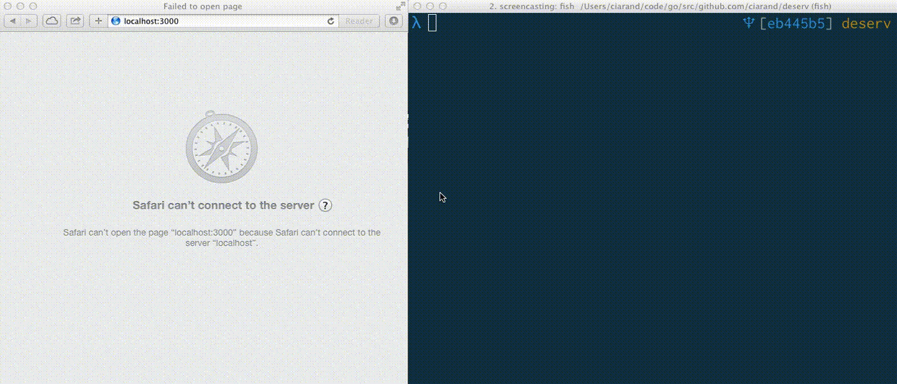

Deserv
A simple development server written in Go

Intended to provide functionality similar to the ones listed here. It provides pretty directory listings, but that's about it in terms of bells and whistles.
I made it because I work with Windows users who don't necessarily have anything cool installed on their machines. The compiled binary can be double-clicked to start, and does exactly what they need.
If you need anything heavier, I recommend getting something heavier.
Notes
- This is not a production web server.
- This is not a production web server.
- This is not a production web server.
Tests
There aren't any. Deal with it. You can still run make test if you like.
go test
? github.com/ciarand/deserv [no test files]
Building
Should be go get-able.
go get github.com/ciarand/deserv
To update, run it with the -u flag.
go get -u github.com/ciarand/deserv
Interested in compiling for multiple platforms? I use goxc. If you
have it installed and in your path, running make compile should create a dump
of all the possible versions in the snapshots directory. If you need more fine
grained control then do it yourself, I'm not your mother.
Usage
# port is optional, defaults to 3000
# "public" is the directory to serve from - defaults to .
./deserve -port 8080 public
Libraries
Deserv is built with Go. This means that it can be run basically anywhere, as near as I can tell.
Deserv is also built on the Martini framework. If you're interested in working on web applications in Go, I highly recommend investigating it.
Finally, the directory index middleware that was developed for this project is available here.
License
MIT, see the license file.